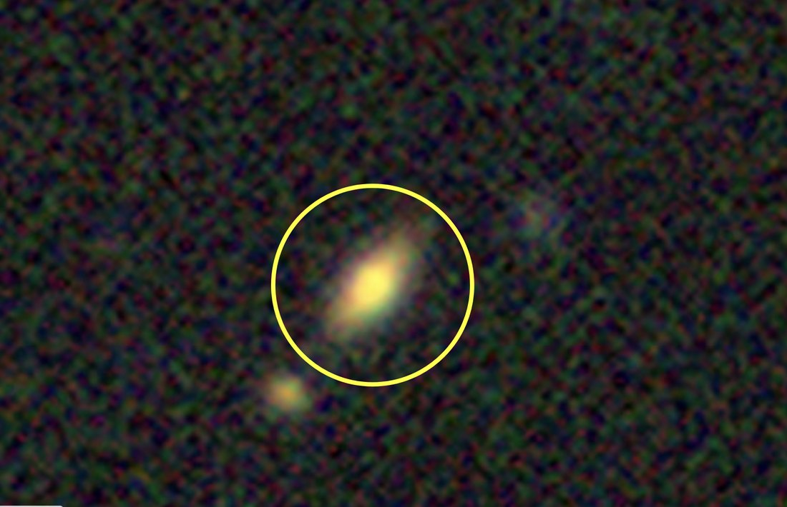
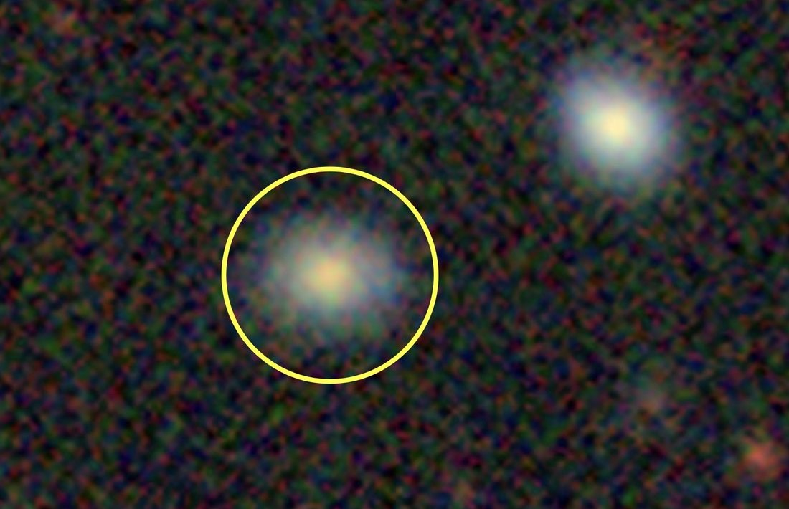
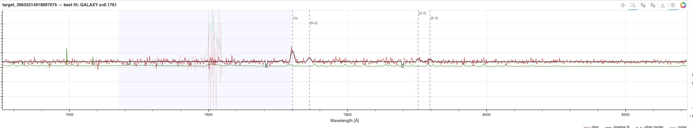
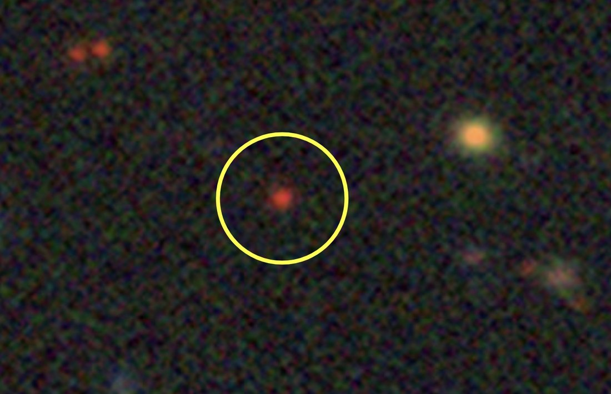
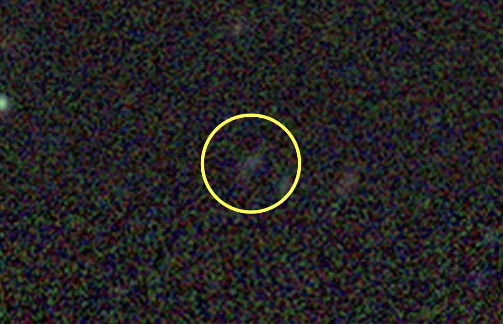
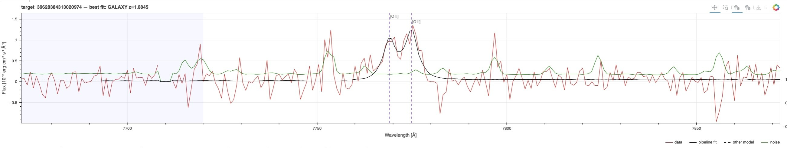
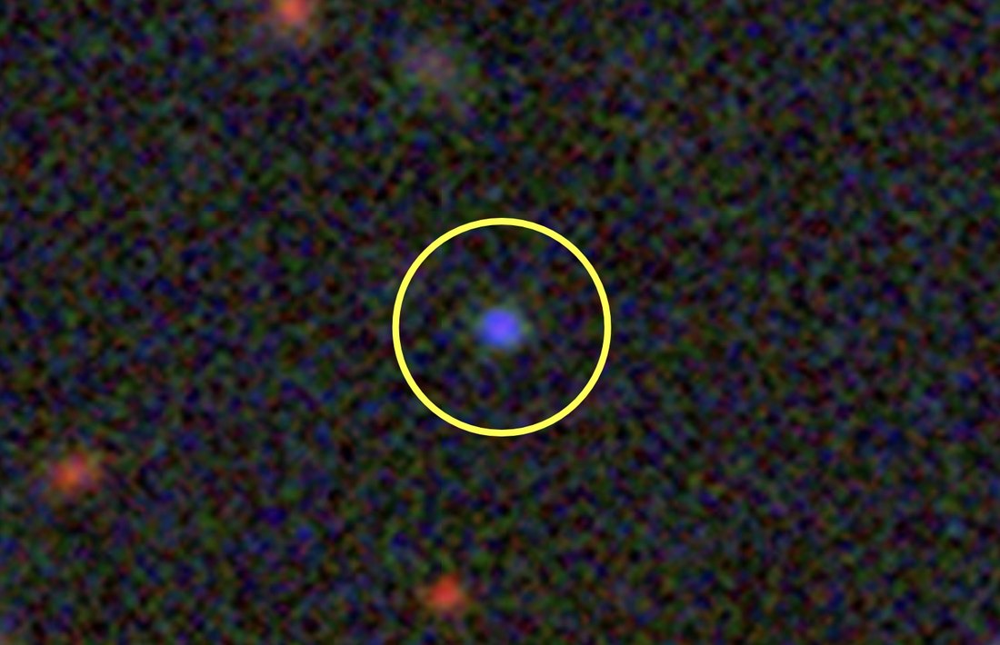

Tracers of the Expansion History
Galaxies, quasars and the Lyman-α forest — what DESI points at, and why no single kind of object will do
DESI measures the angles and redshift spectra of millions of galaxies and quasars, and the expansion history is derived from this information by the analysis pipeline. Everything therefore depends on the objects chosen to do the tracing — the survey's tracers — and on being able to measure an accurate redshift for each one and a distance for the group via baryon acoustic oscillations.
Fly through the universe. David Kirkby's DESI in 3D puts about 30,000 galaxies from roughly five hours of observing into a volume you can move through, with the four tracer classes on separate toggles — turn BGS, LRG, ELG and QSO on and off and watch which shell of distance each one fills.
The Legacy Surveys imaging gives the angular position on the sky, which is what a photograph records. The redshift, measured by DESI, gives the distance along the line of sight. Neither alone is a map. Together they place every point in the volume — and clicking a galaxy in the visualization fetches its Legacy Surveys cutout, so you can see the object behind the point.
The Lyman-α sightlines are drawn too, as thin lines in front of the most distant quasars, showing where they backlight the intergalactic medium.
No single kind of tracer works across the whole survey. Bright galaxies are abundant but nearby; quasars are rare — only about 60 per square degree lie beyond z = 2.1, where their spectra become usable as backlights — but they reach to the edge of the observable matter distribution. DESI uses four target classes plus the Lyman-α forest, each covering a different slice of cosmic time, and each identified by a characteristic set of spectral features. This page describes the physics of each in turn, with an example spectrum showing the features the pipeline keys on.
![Summary of the four DESI tracer classes. For each of the Bright Galaxy Survey, Luminous Red Galaxy, Emission Line Galaxy and Quasi-Stellar Object samples, the figure gives the redshift range, distance range and lookback age, a Legacy Surveys image of an example object circled in yellow, and its DESI spectrum with the key features labeled: the Balmer series and [O III] for the BGS galaxy, Ca K and H with the 4000 ångström break for the LRG, the [O II] doublet for the ELG, and Lyman-alpha and C IV for the quasar. The images run from a yellow-white nearby galaxy through a red point source and a faint smudge to a blue point source.](img/tracers/desi-tracers-overview.jpg)
From Results From DESI, J. W. Rohlf, DPF 2026.
Why more than one
A tracer is useful over the redshift range where two conditions hold at once. It must be numerous enough that the map is not dominated by shot noise — the statistical error from having too few objects per unit volume — and it must be bright enough, in the right lines, that DESI can measure its redshift in a realistic exposure. Those two requirements pull in opposite directions, and no class of object satisfies both across the survey's full span, roughly 0 < z < 4.
![Three stacked panels sharing a redshift axis from 0 to 4.2. The top panel shows which rest-frame spectral features fall inside DESI's wavelength window as horizontal bars: Hα 6563 up to z = 0.49, [O III] 5007 to z = 0.96, Hβ 4861 to z = 1.02, the 4000 ångström break to z = 1.45, [O II] 3727 to z = 1.63, Mg II 2798 from z = 0.29 to 2.5, C IV 1549 from z = 1.32, and Lyman-α 1216 from z = 1.96 upward. The middle panel plots apparent magnitude in the selection band against redshift, with shaded boxes for BGS at low redshift and bright magnitudes, LRG, ELG and QSO extending progressively fainter and further, an L-star galaxy track falling across them, and the region beyond z = 2.1 labeled the Lyman-α forest regime where quasar sightlines act as backlights. The bottom panel gives target densities: BGS 1400 per square degree, LRG 605, ELG 2400, QSO 310, with forest entry marked at z = 2.1.](img/tracers/desi-tracer-galaxies.jpg)
From Results From DESI, J. W. Rohlf, DPF 2026.
Exposures are set differently in the two observing modes. In dark time the spectrograph integrates until the signal-to-noise actually achieved is good enough, so the exposure adapts to conditions; the ceiling of about twenty minutes is not a photon-noise limit but a cosmic-ray one — beyond that, accumulated hits on the CCDs become the dominant problem. BGS, in bright time, uses a fixed three minutes.
There is a second constraint that runs the other way, and it decides which end of the survey is hard. The precision of a baryon acoustic oscillation measurement depends on how many independent wavelengths of the oscillation fit inside the volume surveyed, and nearby shells enclose far less comoving volume than distant ones. So the low-redshift samples are limited by volume however well their spectra are measured, while the high-redshift ones are limited by shot noise however large the volume. BGS and the quasars fail in opposite ways, and neither is the easy case.
The samples also differ in how faithfully they follow the underlying structure. Galaxies are biased tracers: they form in the peaks of the density field, so their clustering is stronger than that of the matter itself, by a factor that depends on the galaxy type and on redshift. Using several tracers with different biases over overlapping volumes is what allows that factor to be separated from the cosmological signal.
BGS — the Bright Galaxy Survey
BGS is the low-redshift anchor of the survey: a magnitude-limited sample of bright, nearby galaxies covering 0.1 < z < 0.6, the epoch in which dark energy dominates the expansion. It is the most detailed map DESI makes of that period, and the sample for which the physics is least ambiguous — these are ordinary galaxies, bright enough that a redshift is rarely in doubt.
- Redshift range
- 0.1 < z < 0.6
- Selection
- BGS Bright: r < 19.5, magnitude-limited
BGS Faint: 19.5 < r < 20.175, color-selected for redshift efficiency
plus a smaller low-z quasar sample - Galaxies
- more than 10 million
- Target density
- about 1400 deg−2
- Footprint
- 14,000 deg², visited three times
- Redshift success
- above 95%, with no significant dependence on observing conditions
- Stellar contamination
- below 1%
- Observing time
- bright time — see below
Why bright time
When the Moon is up the sky background rises, and the faint targets that make up the rest of the survey become harder to observe: the exposure needed to reach a given signal-to-noise grows with the background. Bright galaxies are much less affected, because their own flux dominates. Scheduling BGS into bright time therefore costs the rest of the program nothing and buys a low-redshift survey that would otherwise not fit. Dark time accounts for about two thirds of DESI's observing; the remaining third, when the Moon would make the faint samples inefficient, is BGS's.
The exposures are correspondingly short: a fixed three minutes, against the up-to twenty of a dark-time field. Three minutes on a galaxy at r < 19.5 is enough for a redshift better than 95% of the time, and a fixed exposure keeps the finished map statistically uniform — which matters more for clustering measurements than depth does, since a survey whose selection varies with position imprints a spurious signal on large scales.
What the spectrum shows
Because BGS galaxies sit at low redshift, DESI's wavelength coverage — roughly 3600 to 9800 Å — captures the whole optical rest frame, and the features are the familiar ones of galaxy spectroscopy.
In a quiescent galaxy — the massive early-type systems that dominate the bright end of the sample — the light comes from an old stellar population and the spectrum is a composite of cool stellar atmospheres. The defining feature is the 4000 Å break, a sharp drop in flux caused by the accumulated opacity of ionized metals in stellar photospheres, reinforced by the Ca II H and K absorption lines at 3934 and 3969 Å. Below it the continuum is weak; above it, strong. That step is unmistakable and is what pins the redshift even when no emission line is present. The G band near 4300 Å, the Mg b triplet near 5175 Å and Na D near 5893 Å follow as broad absorption features.
In a star-forming galaxy the picture inverts. Young massive stars ionize the surrounding gas, and the spectrum carries strong emission lines from the recombining nebula: Hα at 6563 Å, Hβ at 4861 Å, the [O III] doublet at 4959 and 5007 Å, [N II] flanking Hα, and [O II] at 3727 Å. These are narrow and high-contrast, so a single well-measured line is enough for a redshift.
A magnitude-limited sample contains both, in proportions that shift with luminosity and redshift, which is one reason BGS is useful for more than distance measurements: the same spectra record what the galaxies are doing, not only where they are.
Two BGS galaxies
The two cases above are easiest to see side by side in real data. Both of these are DESI BGS targets at almost the same redshift, and their spectra could hardly look less alike. The imaging gives the first clue: one has a yellow core of old stars, the other is bluer and more diffuse.


The yellow circle is 10 arcseconds across in both frames. A DESI fiber subtends about 1 arcsecond — so the spectrum comes from a small central patch of the galaxy, not from all the light you see here. Credit: DESI Legacy Imaging Surveys / Legacy Survey Viewer.
![DESI spectrum of BGS target 39633335672114298, fitted as a galaxy at redshift 0.1990. Flux in units of 10 to the minus 17 erg per square centimeter per second per ångström is plotted against observed wavelength from 3600 to 9800 ångström. The continuum is weak below about 4800 ångström and strong above it, forming the redshifted 4000 ångström break, with the Ca II H and K absorption lines marked just blueward of the step. The G band, Mg I and the Na D1 and D2 lines appear as further absorption features. No emission lines are present. The pipeline fit is overlaid on the data and the noise curve runs along the bottom.](img/tracers/bgs-spectrum-quiescent.jpg)

LRG — Luminous Red Galaxies
Where BGS takes whatever is bright, the luminous red galaxy sample is chosen for a type. LRGs are the most massive galaxies in the universe: old, gas-poor ellipticals that finished forming stars billions of years ago and have been reddening passively ever since. They are intrinsically luminous, which makes them visible far away, and remarkably uniform, which makes them easy to recognize photometrically. DESI uses them to carry the survey from z = 0.4 out to z = 1.1, the range in which the expansion is turning over from deceleration to acceleration.
- Redshift range
- 0.4 < z < 1.1
- Selection
- g, r, z optical plus W1 infrared from the DESI Legacy Imaging Surveys
- Galaxies
- 8 million
- Target density
- 605 deg−2, a comoving density of 5 × 10−4 h3 Mpc−3 over 0.4 < z < 0.8 — substantially denser than SDSS, BOSS or eBOSS, and reaching further
- Redshift success
- 98.9% confident, with a 0.2% catastrophic failure rate
- Stellar contamination
- 0.5%
- Observing time
- dark time
Why the infrared band matters
The problem with selecting distant red galaxies from optical colors alone is that they are degenerate with nearby faint red things — cool stars, and dusty galaxies at low redshift all look similar in g, r and z. The 4000 Å break is what distinguishes them, and by z ≈ 1 that break has moved out of the optical bands altogether, past 8000 Å.
WISE's W1 band at 3.4 µm solves this. An old stellar population is bright in the near-infrared, where the light of the cool giants that dominate it peaks, while stars and dusty low-redshift galaxies are not. Adding W1 to the optical colors therefore separates massive quiescent galaxies at z ≈ 1 from the foreground that would otherwise swamp them — which is why the LRG selection is robust enough that only half a percent of the targets turn out to be stars.
What the spectrum shows
An LRG spectrum is the extreme case of the quiescent galaxy described above: no emission lines to speak of, and a strong 4000 Å break with deep Ca II H and K absorption on its blue side. There is nothing else to work with — which sounds like a handicap and is not, because the break is a sharp, high-contrast feature and these galaxies are uniform enough that the same template fits almost all of them. Nearly 99% yield a confident redshift.
What does become difficult is the wavelength. At z = 1 the 4000 Å break lands near 8000 Å, at the red end of DESI's coverage where the sky is brighter and the CCD response is falling. That, rather than any property of the galaxies, is what sets the upper redshift limit of the sample.
LRGs are also strongly biased tracers — being the most massive galaxies, they sit in the rarest peaks of the density field, so their clustering amplitude is well above that of the matter. That makes the BAO signal easy to detect and the bias factor something the analysis must model carefully.
An LRG at z = 0.8
This is what all that luminosity amounts to in an image: a small red point. At z = 0.8 the light has traveled about seven billion years, and the galaxy — one of the most massive in the universe — is a few pixels across. Its color is the whole story. Compare it with the yellow-white galaxy to its right, which is much nearer.

Credit: DESI Legacy Imaging Surveys / Legacy Survey Viewer.
![DESI spectrum of LRG target 39633019211876573, fitted as a galaxy at redshift 0.8007. Flux in units of 10 to the minus 17 erg per square centimeter per second per ångström is plotted against observed wavelength from 3600 to 9800 ångström. Blueward of about 7200 ångström the flux is close to zero and dominated by noise; at that wavelength the continuum steps up sharply, forming the redshifted 4000 ångström break, with the Ca II K and H absorption lines marked just blueward of the step. The G band and Mg I appear further red. No emission lines are present. The green noise curve rises steeply at the blue end.](img/tracers/lrg-spectrum.jpg)
ELG — Emission-Line Galaxies
The emission-line galaxies are the opposite selection to the LRGs, and the largest sample DESI takes: about a third of all its tracers. Rather than massive dead ellipticals, these are ordinary star-forming galaxies — smaller, bluer, and far more numerous. They are also faint, and would be nearly impossible to measure were it not for one thing: a galaxy that is forming stars announces itself with emission lines, and a single strong line is enough to fix a redshift.
- Redshift range
- 0.6 < z < 1.6, with 1.1 < z < 1.6 expected to give the tightest constraints
- Selection
- a g-band magnitude cut with a (g − r) versus (r − z) color box
- Galaxies
- roughly 13 million — about one third of DESI's ~40 million extragalactic redshifts
- Target density
- two disjoint subsamples, ~1940 deg−2 and ~460 deg−2
- Redshift criterion
- based on the [O II] flux; more than 400 deg−2 reliable redshifts in each of 0.6 < z < 1.1 and 1.1 < z < 1.6
- Observing time
- dark time
Why [O II] does the work
In an LRG the redshift comes from a break in the continuum. In an ELG it comes from a line — specifically the [O II] doublet at 3726 and 3729 Å, emitted by singly ionized oxygen in gas photoionized by young stars. Two properties make it the most useful line in the survey.
First, its rest wavelength is short. A line at 3727 Å is still inside DESI's coverage at z = 1.6, where it has moved to about 9700 Å. Hα, by contrast, leaves the red end of the spectrograph by z ≈ 0.5. If the survey had to rely on Hα, the ELG sample would stop before it began.
Second, it is a doublet. The two components sit about 3 Å apart, and DESI's resolution separates them. That turns a single peak of uncertain identity into a pair with a known separation and a known ratio — a distinctive signature that can be recognized with confidence even when the signal is weak. A lone unidentified line at 7000 Å could be almost anything; a correctly spaced doublet at 7000 Å is [O II] at z = 0.88 and very little else.
This is why the sample's redshift criterion is written in terms of [O II] flux rather than continuum magnitude. What matters is not how bright the galaxy is but how bright its line is, and the color box is designed to select galaxies likely to have a strong one.
What the spectrum shows
An ELG spectrum is mostly noise with a few spikes in it — a faint blue continuum that may barely register, and the emission lines standing well clear of it. [O II] is the strongest and the most useful, but it is far from alone: the Balmer series contributes Hβ at 4861 Å, Hγ at 4340 Å and Hδ at 4102 Å, and the [O III] doublet at 4959 and 5007 Å is often prominent. Several lines at a known spacing make a redshift far more secure than one line ever could.
Which of them are available depends on redshift, because they sit at longer rest wavelengths than [O II] and so leave DESI's window sooner. [O III] runs out near z = 0.96 and Hβ near 1.02; the bluer Balmer lines survive a little further. Above z ≈ 1 they have moved into the infrared and [O II] is working alone — which is precisely why the sample is selected on it. The contrast with an LRG spectrum, all continuum and no lines, is about as complete as two galaxy spectra can be.
Being young, low-mass systems, ELGs are also weakly biased tracers: they inhabit more ordinary regions of the density field than LRGs, so their clustering is closer to that of the matter itself. Combined with the sheer number of them, that is what makes the 1.1 < z < 1.6 range DESI's most constraining.
An ELG at z = 1.08
ELGs are typically very weak in the optical — in imaging they are barely there at all — yet they carry a very strong [O II] signature. The pair of figures below is the clearest illustration on this page of why the survey works the way it does.

Credit: DESI Legacy Imaging Surveys / Legacy Survey Viewer.

QSO — Quasars
Quasars are not galaxies being surveyed for their starlight. They are the accreting supermassive black holes at the centers of galaxies, radiating as matter spirals in — luminous enough to be seen across most of the observable universe, and so compact that they appear as points. That single fact shapes everything about how DESI uses them, and everything about the difficulty of finding them.
They are also the only DESI target with two jobs. Between z = 0.8 and 2.1 they are tracers in their own right, marking positions in the density field where no galaxy sample reaches. Beyond z = 2.1 their own position matters less than the light they send: passing through the intergalactic medium, it is absorbed by neutral hydrogen and arrives carrying a record of every cloud it crossed. The quasar stops being the object of study and becomes the lamp — the Lyman-α forest.
- As direct tracers
- 0.8 < z < 2.1
- As backlights
- z > 2.1, for the Lyman-α forest
- Selection
- g, r, z optical from the Legacy Imaging Surveys with W1 and W2 infrared from WISE
- Target density
- 310 deg−2, yielding more than 200 confirmed quasars deg−2
- Lyman-α quasars
- about 60 deg−2 at z > 2.1
- Purity
- 71% quasars; the remainder galaxies (16%), stars (6%) and inconclusive spectra (7%)
- Observing time
- dark time
The problem: quasars look like stars
A galaxy is extended, so an image alone distinguishes it from a star. A quasar is not. On the sky it is a point of light, indistinguishable in shape from any of the millions of faint stars in our own Galaxy that lie along the same line of sight. Selecting quasars is therefore a problem of color rather than shape, and the contaminant vastly outnumbers the target.
The infrared bands are what break the degeneracy. A star radiates roughly as a blackbody, and its flux is falling by 3 to 5 µm. A quasar does not: hot dust surrounding the accretion disc re-radiates in the near-infrared, so the spectrum continues as a power law where a star's would be dropping away. In the W1 − W2 color that WISE measures, quasars are distinctly red and stars are not — a separation clean enough to build a sample from, and the reason the selection uses two infrared bands rather than one.
Even so, this is the least pure of DESI's samples: 71%, against the LRGs' 99.5%. Roughly one target in six turns out to be a galaxy and one in sixteen a star. That is not a failure of the selection so much as the price of the population — and it is why the quasar targeting uses machine-learning classification on the photometry rather than the simple color boxes that suffice for LRGs and ELGs.
What the spectrum shows
A quasar spectrum looks like nothing else in the survey. The continuum is a strong blue power law rather than a stellar composite, and on it sit broad emission lines — hundreds of ångström wide, corresponding to velocities of thousands of kilometers per second in gas orbiting close to the black hole. Which lines are visible depends entirely on redshift, because they originate in the ultraviolet:
Mg II at 2798 Å is the workhorse at the low-redshift end. C III] at 1909 Å and C IV at 1549 Å enter the observed window as redshift increases, and by z ≈ 2.1 Lyman-α itself at 1216 Å has moved past 3600 Å into DESI's coverage. That last arrival is what makes z = 2.1 the boundary in the table above: it is the redshift at which the forest becomes observable from the ground, not a property of quasars.
Broad lines are easy to detect and harder to measure precisely. A line thousands of kilometers per second wide, often asymmetric and sometimes velocity-shifted relative to the host galaxy, does not define a redshift as sharply as a narrow [O II] doublet does. Quasar redshifts are consequently less precise than galaxy redshifts — acceptable when the quasar is a backlight, since what matters then is the absorption pattern along the line of sight rather than the position of the lamp.
Quasars are strongly biased tracers, inhabiting massive haloes at early times, and they are sparse. Both facts push their clustering measurements towards being limited by shot noise rather than by volume — the opposite regime to BGS, and the reason the two samples fail in opposite ways.
A quasar at z = 2.94
Compare the image below with the luminous red galaxy above. Both are essentially point sources; the only difference an image offers is color, and here it is blue rather than red. That is the whole of the photometric handle in the optical, and it is why the infrared bands matter so much.

Credit: DESI Legacy Imaging Surveys / Legacy Survey Viewer.
![DESI spectrum of target 39632975825994040, classified as a QSO at redshift 2.9416. Flux in units of 10 to the minus 17 erg per square centimeter per second per ångström is plotted against observed wavelength from 3600 to 9800 ångström. A very strong broad Lyman-α emission peak rises near 4790 ångström, with broad C IV near 6110 and C III] near 7525 ångström, all sitting on a declining continuum. Blueward of the Lyman-α peak the spectrum is broken up into dense narrow absorption features, the Lyman-α forest. The pipeline fit is overlaid on the data.](img/tracers/qso-spectrum.jpg)
Beyond the four samples
Those four target classes are what DESI selects and observes. The fifth tracer is not a target at all: the Lyman-α forest is extracted from the spectra of the quasars above, turning each one into a one-dimensional map of intergalactic hydrogen along its line of sight. It reaches beyond z = 2 and gives DESI its longest lever arm on the expansion history — and it has a page of its own.